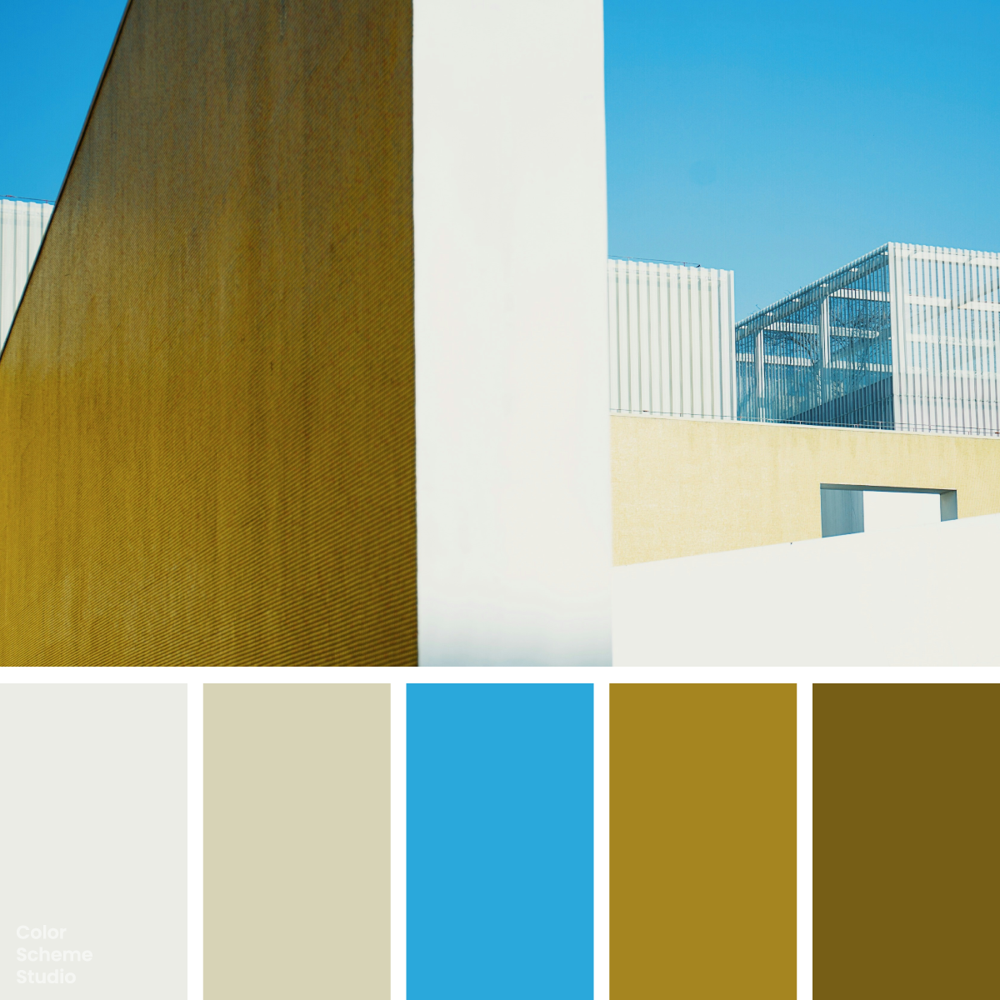

Summer / Vivid
Summer balanced color palette
Soft Chalk, Pale Ecru, Clear Cyan, Muted Ochre, Deep Olive Gold. Explore five colours and copy their HEX values.

The palette
Click a hex to copyRGB & CMYK values
| Color | Hex | RGB | CMYK (approx.) |
|---|---|---|---|
| Soft Chalk | #EBECE6 | 235 236 230 | 0 0 3 7 |
| Pale Ecru | #D7D3B6 | 215 211 182 | 0 2 15 16 |
| Clear Cyan | #2AA8DB | 42 168 219 | 81 23 0 14 |
| Muted Ochre | #A58520 | 165 133 32 | 0 19 81 35 |
| Deep Olive Gold | #765E16 | 118 94 22 | 0 20 81 54 |
Clear cyan against a quieter golden range
Clear Cyan is the only distinctly cool, vivid hue in this set. Muted Ochre and Deep Olive Gold share a warm yellow direction, but their different depths keep the palette from becoming one flat gold. Pale Ecru links that warmth to the almost neutral Soft Chalk. In the previews, cyan forms the large field and the card background, with a pale ecru upright shape, an ochre block and a chalk circle. Deep Olive Gold carries the action, while pale ecru frames the card. Light lettering on that deeper shade stays distinct; the card uses dark ink so its title remains readable against cyan. The balance comes from one clear blue-green hue meeting a broader, quieter warm range.
The palette, in use.
One way these five colours can look together.
A fresh
point of view.
Colour, stories and things
worth keeping.
A little
inspiration.
good idea.A collection worth coming back to.
Illustrative previews. White and dark ink are added for readable text.
Photo by R Ra on Unsplash. Color studies and application notes by Color Scheme Studio.